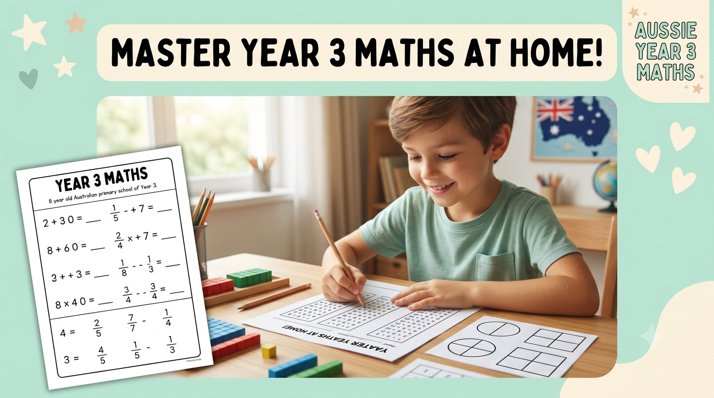

Year 3 · Parent & teacher guide
Best Year 3 Maths Worksheets for Australian Students
Looking for the best Year 3 Maths worksheets in Australia? Here's a complete, ACARA-aligned guide to what Year 3 students need to practise — plus free printable worksheets for every topic.

In this guide: What Year 3 Maths covers · The best worksheet topics for Year 3 · Why Year 3 is a big step up · How to choose quality worksheets · Practical tips for parents and teachers · FAQs
Year 3 is a turning point in primary maths. Children move from concrete counting towards more abstract number work — bigger numbers, the beginnings of multiplication and division, fractions, and their first NAPLAN test.
The right worksheets make this transition much easier. At Aussie Primary Academy, our free, printable Year 3 Maths worksheets are designed around the Australian Curriculum (Version 9.0), so every activity matches what your child is actually learning at school.
Why Year 3 Maths Is a Big Step Up
Understanding the shift helps parents support their child effectively.
In Year 1 and 2, maths is mostly about counting, simple addition and subtraction, and recognising numbers. In Year 3, under ACARA v9.0, students are expected to:
- Work confidently with numbers up to 10,000
- Begin multiplication and division facts
- Understand simple fractions (halves, quarters, thirds)
- Use money in real-life problem solving
- Read analogue and digital time
- Measure length, mass and capacity
- Interpret simple graphs and collected data
It's also the first year Australian students sit NAPLAN, which makes consistent, low-pressure practice at home especially valuable.
Best Year 3 Maths Worksheet Topics
The core skill areas every Year 3 worksheet collection should cover.
1. Place Value to 10,000
Worksheets that ask students to read, write, order and partition numbers into thousands, hundreds, tens and ones build the number sense everything else depends on.
2. Addition and Subtraction Strategies
Look for worksheets covering mental strategies, written algorithms and word problems, not just number sentences in isolation.
3. Introductory Multiplication and Division
Year 3 typically focuses on the 2, 3, 5 and 10 times tables, along with the connection between multiplication and division as inverse operations.
4. Fractions of a Whole
Halves, quarters, thirds and simple equivalent fractions, ideally shown visually with shapes and groups of objects before moving to numbers alone.
5. Money and Real-Life Problem Solving
Counting coins and notes, giving change, and solving simple shopping-style word problems.
6. Time, Length, Mass and Capacity
Reading analogue and digital clocks to the nearest minute, and using standard units (cm, m, g, kg, mL, L) to measure and compare.
7. Data and Graphs
Collecting simple data and representing it in picture graphs and column graphs, then answering questions about it.
Explore all of these topics in our free Year 3 Maths worksheet collection.
How to Choose Quality Year 3 Maths Worksheets
Not all free worksheets online are created equal. When choosing worksheets for your Year 3 child, look for:
- Clear alignment with the Australian Curriculum (Version 9.0)
- A mix of visual, hands-on and written questions
- Answer keys, so parents and tutors can check work without guessing
- Age-appropriate difficulty that builds gradually rather than jumping straight to hard problems
Tips for Parents and Teachers
Small, consistent habits matter more than long study sessions.
- Place value at home: Use plates or cups labelled hundreds, tens and ones. Put 3 spoons in “hundreds”, 2 in “tens” and 5 in “ones” — then say the number together (325).
- Times tables in the car: Practise 2, 5 and 10 tables on short trips. Keep it playful — no pressure for speed.
- Real word problems: “We bought 24 biscuits and ate 8. How many are left?” Use shopping, cooking and pocket money.
- Fractions with food: Cut a sandwich or pizza into halves and quarters and ask your child to label the parts.
- Short sessions: 10–15 minutes of worksheet practice plus 5 minutes of real-life talk is better than one long stressful session.
- Celebrate effort and improvement, not just correct answers. Revisit a topic if a worksheet shows a gap.
Common Year 3 Maths Misconceptions
Spotting these early makes correcting them much easier.
"The bigger digit is always worth more." Many Year 3 students read 305 as "thirty-five" because they focus on individual digits rather than their position. Practise saying numbers with expanded language ("3 hundreds, 0 tens, 5 ones") alongside the numeral.
"Multiplying always makes a number bigger." This holds true for whole numbers, but it's worth flagging early so it doesn't harden into a rule that causes confusion later when fractions and decimals are introduced.
"A fraction with a bigger denominator is a bigger fraction." Students often assume 1/8 is bigger than 1/4 because 8 is bigger than 4. Visual models — folding paper, drawing shapes — help make the actual size relationship click.
"14 and 41 are basically the same, just written differently." Because number words don't always match written order for young learners, place value charts are worth revisiting even after a child seems confident with two-digit numbers.
Explore Free Year 3 Worksheets
Browse the complete Year 3 worksheet collection, including printable Maths, English, Reading, Writing and Science resources, or see our full Maths worksheet library across every year level.
Downloads are free and do not require an account.
Frequently Asked Questions
What maths topics does Year 3 cover in Australia?
Under the Australian Curriculum (Version 9.0), Year 3 Maths covers place value to 10,000, addition and subtraction, introductory multiplication and division, simple fractions, money, time, length, area, mass, and reading simple graphs and data.
Are these Year 3 Maths worksheets free?
Yes. All Year 3 Maths worksheets from Aussie Primary Academy are free to download as printable PDFs, with no sign-up required.
How many maths worksheets should a Year 3 student do per week?
Two to three short 15–20 minute sessions per week, alongside regular schoolwork, is usually enough to build confidence without causing burnout.
Do these worksheets help with NAPLAN preparation?
Yes. Year 3 is the first NAPLAN year in Australia, and these worksheets reinforce the core number, measurement and data skills NAPLAN Numeracy assesses.
Related Reading
More free guides and worksheets for Australian primary families.
Final Thoughts
Year 3 asks a lot of young learners — bigger numbers, new operations and their first standardised test. With regular, low-pressure practice using well-aligned worksheets, most children move through this year with growing confidence.
At Aussie Primary Academy, we're proud to help Australian families with free printable learning resources that make Year 3 Maths practical, curriculum-aligned and stress-free.